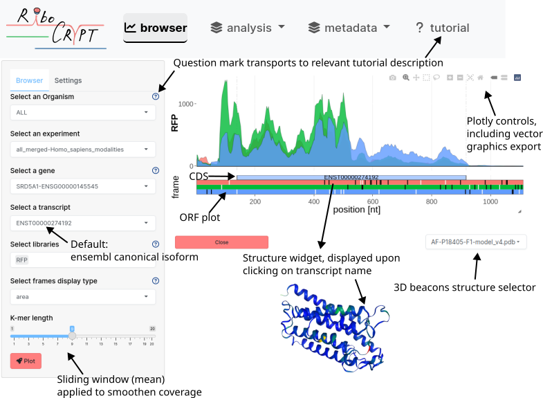
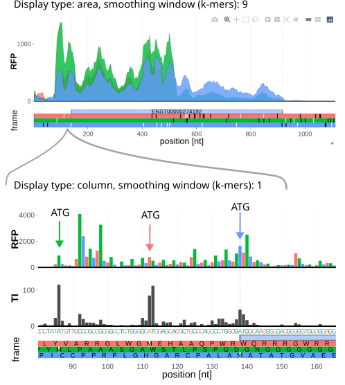
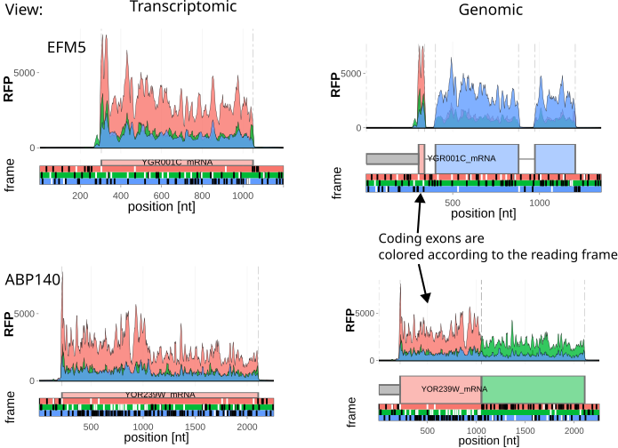
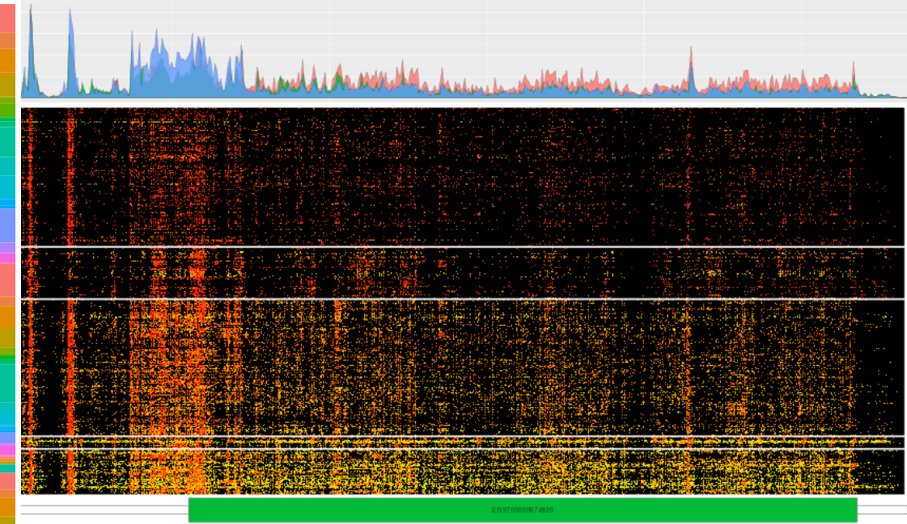
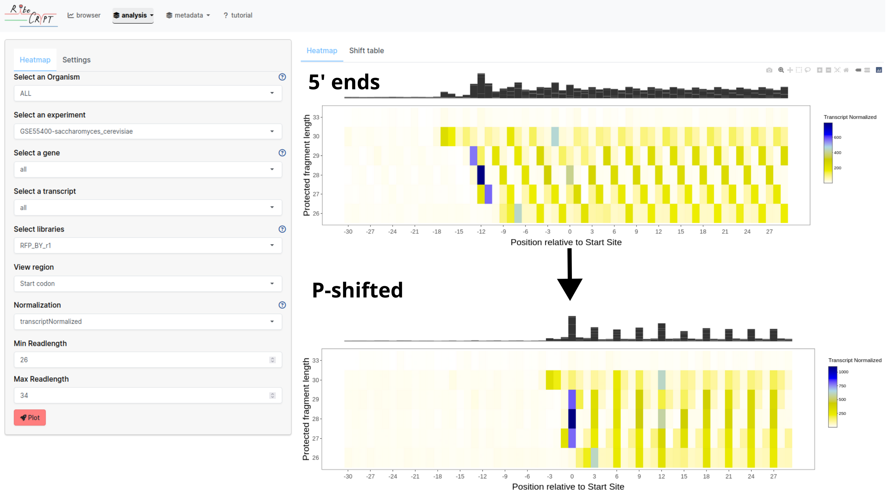

Primary url:
https://ribocrypt.org/ (This leads to browser page)
Welcome to RiboCrypt
RiboCrypt is an R package and web server for interactive
visualization and analysis in genomics. RiboCrypt works
with most NGS-based methods, but much emphasis is put on Ribo-seq data
visualization. RiboCrypt uses ORFik experiment objects, so to ensure
compatibility use
ORFik
and
massiveNGSpipe
to process your own data. For questions or issues, see the contact
details at the end of this tutorial.
This tutorial covers the main workflows and settings. Available studies, annotations and precomputed results depend on the server’s data collection.
For more general material about ribosome profiling, we suggest reading this review. For more technical explanation of data processing steps and specific analyses, it’s best to see ORFik Overview vignette, especially chapter 6 “RiboSeq footprints automatic shift detection and shifting”.
The Browser displays sequencing coverage. Gene and transcript controls are above the plot; the sliders button opens a panel with Browser and Settings tabs. Coverage can be displayed in transcript coordinates, genomic coordinates, or with introns shortened to retain specified flanks. Figure 1 shows SRD5A1, which has been reported to be decoded in three frames.

Figure 1. SRD5A1 gene displayed using default options. Using API, this browser view can be re-generated using this link.
When you press Generate Plot, the selected data will be displayed according to specified options, explained later in the tutorial.
The browser window consists of the specific parts:
white (start codon, ATG)
black (stop codons, TAA | TAG | TGA)
brown (custom motifs, e.g. NTG all start codon alternatives)
When zoomed in, the amino acid sequence is displayed within each frame.
In the example above (Fig. 1), notice green coverage preceding CDS (in Blue). It corresponds to overlapping open reading frame, so it is clear that there are two regions that undergo translation simultaneously in this locus.
The display panel shows the primary settings, (study, gene, sample, etc):
Usually each experiment has multiple libraries. In the case of merged experiments, different modalities (RFP, RNA, disome, TI, see Fig. 2) can be selected in this field. Select which one to display, if you select multiple libraries they will be stacked in the browser as multiple tracks.
Libraries are usually named using these fields:
For example:
Library names reflect the available experiment metadata; inspect
Metadata > Samples for the full record rather than
relying on the name alone. Search there by study or run accession to
find a library. A known run accession can also be supplied as a Browser
URL parameter, for example library=SRR5090937, within the
selected experiment. An example metadata search is https://ribocrypt.org/?search=SRR5090936#Samples.
In Figure 2, setting K-mer length to 1, choosing columns and adding TI-seq makes the frame-specific signal easier to inspect. TI-seq uses translation-initiation inhibitors such as lactimidomycin or harringtonine. Initiation peaks and changes in frame-specific coverage near stop codons can support hypotheses about overlapping translation. Interpret these patterns alongside read depth, mapping quality and independent evidence; visual inspection alone does not establish a translated region. Try modifying yourself, for example switching on RNA-seq track, or altering smoothing window width.

Figure 2. Comparison of display types and smoothing window widths.
Settings tab contains additional parameters:
auto). Enter a maximum such as
500000 or 500k for a range starting at zero,
or a pair such as 100:500000. Click Generate Plot to apply.
The same limits apply to coverage and summary tracks in Browser and
Observatory Browse, allowing comparisons across genes. Sequence,
annotation and heatmap rows are unaffected. With log scaling enabled,
limits refer to the displayed log2(count + 1) values. Get URL preserves
the setting. Invalid, negative, non-finite or reversed limits produce an
error message.Uniquely, RiboCrypt allows for toggling between transcriptomic and genomic views, while displaying coding exons in colors according to the correct reading frame. Moreover, extensions allow for exploration of large chunks of the genome, even tens of thousands of bases. Try finding all genes in this browser window, and then turn full annotation on to see what you missed! (loading may be a bit slow, but displaying over region 30 thousands bases long here isn’t practical)

Figure 3. Comparison between transcriptomic and genomic view on yeast EFM5 and ABP140 genes.
MegaBrowser compares coverage across libraries in a precomputed collection, with one library per heatmap row before optional display collapse (Fig. 5). Choose this workflow for collection-wide patterns; use Browser for individual tracks or Observatory to define groups and compare their merged tracks.
The collection must provide metadata, count/library-size tables and per-gene coverage in fst files. MegaBrowser reads that precomputed coverage, not one bigWig per library. Available transcripts and predicted-translon annotations depend on the collection: not every isoform necessarily has coverage. The small ORFik example experiment used in the package overview does not supply these collection files.
The analysis library set consists of the individual libraries passing the count filter. Display controls do not change this set or rerun clustering. Change coverage/annotation settings and generate the plot again to start a new analysis. For a concrete example, see the ATF4 walkthrough.

Figure 5. Heatmap of thousands of libraries coverage over ATF4 transcript. Clustered using k-means = 2, with summary track displayed on top.
Gene and transcript controls are above the heatmap. The sliders button opens the collection and settings panels. Organism/experiment selection works as in the Browser, but the selected experiment must be a collection.
Heatmap values are log-transformed after normalization. They describe profile patterns, not raw counts. Translon enrichment instead reloads raw unbinned coverage for length-normalized ratios; it does not divide these heatmap values.
Predicted translons adds the T and/or TC annotation sources where available. Extensions, full annotation and intron collapsing determine which intervals are shown. Generate the plot after changing these settings; the Translon enrichment page uses the resulting annotation track’s coding intervals.
Choose Plotly for interactive heatmaps or ComplexHeatmap for the static alternative. The interactive renderer uses a standard Plotly heatmap for moderate matrices (up to two million cells) and WebGL for larger full views. Collapsed views use the standard renderer. This does not round or downsample coverage. Rendering time depends on region length, library count, clustering and hardware.
The toolbar above the result pages separates display controls from the metadata enrichment selector. These controls apply without another Generate Plot:
clean_cds replaces its parent CDS when available,
preventing overlapping upstream-ORF bases from contributing to the CDS
summary. Otherwise the original CDS is retained. Each value is mean raw
unbinned coverage per nucleotide in the region, including zero-coverage
bases but excluding exon gaps. Libraries remain separate unless
Collapsed clusters is also active. With both options,
colours show log2(cluster mean density / region mean density across all
analysis libraries), using the selected colour theme and Color scale
zoom, clipped at -1 and +1 (0.5x and 2x). The legend follows the
selected palette. Thus a 50% relative increase has the same colour in a
weak uORF as in a strongly covered region. The baseline is
library-weighted and does not change with Visible groups. Hover retains
raw mean coverage and exact fold changes; zero cluster coverage uses the
lowest colour, while zero/undefined reference coverage remains
undefined. No pseudocount is added. This is a descriptive display, not a
significance test or correction for library-depth/study effects. The
summary and annotation tracks use the same region columns; hover over
region labels for their aliases and coordinates. Clustering and
enrichment still use the original full analysis, and unchecking restores
the positional heatmap without recomputing clusters.With Collapse translons enabled, annotation labels use transcript coordinates to distinguish uORFs, internal ORFs and downstream ORFs. These names describe position relative to the CDS, not independent evidence of translation. User regions retain their labels; hover preserves source aliases and region IDs.
Click a heatmap cell to inspect its library or cluster.
Distribution compares its libraries with the remaining
analysis libraries using raw region density or log2(region/reference
density). The reference defaults to clean CDS when available. A ratio of
1 has score 0, 2 has score +1 and 0.5 has score -1. Zero numerators have
score -Inf: they are counted in the inspector but omitted
from the finite distribution. No pseudocount is used. Library tables and
CSV retain both raw Ratio and Log2FC values.
Libraries lists the selected cell’s libraries, and
Libraries CSV exports their densities, coverage sums,
ratios and metadata.
Ratio by metadata compares terms in the chosen metadata column across all analysis libraries, irrespective of Visible groups. Numeric metadata is binned. The table includes log2-transformed raw-ratio quartiles (including zeros), valid/undefined/zero ratios, selected-library counts, support counts and study representation where study metadata is available. Term-versus-rest Wilcoxon tests and rank-biserial effects are exploratory; BH adjustment covers the selected metadata field. These are not study-adjusted or replicate-aware effects. Study concentration is an audit aid, not a correction. Zero numerators remain valid ratios; zero or undefined reference densities do not.
Settings default to marking low-support cells with a grey x: a library must have a region coverage sum of at least 10, and a collapsed group needs at least three supporting libraries. Individual-library cells require one supporting library. Both thresholds are editable. Ratio-table support requires adequate numerator and reference coverage; it does not filter the ratio statistics. Coverage sums are density multiplied by region length, not independent read counts. Markers do not change colours, clustering or enrichment. Inspection reuses the loaded coverage matrix; metadata comparisons are computed only when their tab is opened.
The distinction between display and analysis also applies to the result pages:
| Page | Libraries used |
|---|---|
| Heatmap | Visible groups; optionally one mean row per group. |
| Group summary | Individual libraries in Visible groups, even when collapsed. |
| Enrichment and Statistics | The full count-filtered analysis library set. |
| Translon enrichment | The full count-filtered analysis library set, using raw coverage. |
| Result table | The full analysis set by default; enrichment/cluster clicks can filter it. |
Group summary explains the metadata behind the currently visible groups. Clearing Visible groups includes all groups; collapse does not change the underlying libraries summarized here.
Each group/field row shows its library count and representative metadata value. Agreement (%) is the percentage of all libraries in the group matching the most frequent categorical value; missing or empty values remain in the denominator. It is a descriptive proportion, not an enrichment score. Numeric fields show their mean, minimum and maximum instead of agreement.
Use this page to assess whether a collapsed sidebar label represents most of its libraries or a mixed group. Its CSV exports retain numeric precision; rounding applies only to the displayed table. Export scopes are summarized below.
The three main tabs are Heatmap, Factor enrichment and Translon enrichment. Factor enrichment groups the Enrichment, Group summary, Statistics and Result table views in one workspace.
These pages summarize metadata enrichment within clusters or ordering bins. Chi-squared residuals indicate overrepresentation (positive) or underrepresentation (negative) of terms such as tissue and cell line. Large absolute residuals identify patterns worth investigating; they are not, by themselves, proof of a biological effect. Study-specific effects and correlated metadata can influence these patterns.
The Enrichment tab displays the enrichment chart;
Statistics gives the corresponding table. Use
Enrichment metadata in the toolbar to choose any
available metadata column, such as CELL_LINE, independently
of the column used to order the heatmap. This updates the statistics and
enrichment chart immediately, without loading coverage or recomputing
the heatmap or its clusters. The default Grouping
option uses the existing ordering field. Numeric metadata are divided
into five bins; missing values are represented as a separate category.
Enrichment is always computed from individual libraries, even when
collapsed rows are shown.
If no clustering was applied, this tab gives the number of items per metadata term (40 brain samples, 30 kidney samples etc).
This page compares the unique CDS and translon regions shown in the annotation track. Enable the desired predicted translons (T and/or TC) and Generate Plot, then open Translon enrichment. Analysis starts only when this page is opened. Identical complete exon interval sets are merged, retaining every source label; regions with identical outer bounds but different internal intervals stay separate.
When an upstream translon overlaps a CDS, clean_cds excludes the union of the overlapping upstream-ORF bases. It can contain several disjoint intervals. No clean CDS is added when nothing was removed. An entirely removed CDS has length zero and undefined coverage ratios.
The Coverage ratio selector offers each unordered region pair once, with translons ahead of CDS references in the numerator and clean CDS references in the denominator. For each library, the ratio is the numerator’s mean raw coverage per nucleotide divided by the denominator’s mean raw coverage per nucleotide. Coverage comes from the unbinned collection, not the log-scaled, normalized heatmap. The same count-filtered libraries and saved groups are used. Collapsed rows and Visible groups do not change this analysis.
UR1, then UR2, and so on). Enter one-based
inclusive transcript coordinates: 40:80 includes both
endpoints; 40 is identical to 40:40. Reversed
intervals, malformed input and coordinates outside the raw transcript
coverage are rejected with an error message. The region receives the
next sequential ID (for example, R7) and joins all ratio,
statistics and CSV results. User-defined regions do not change
annotation-derived clean CDS intervals and reset on a new analysis.No pseudocount is added: a zero denominator gives an undefined ratio. A zero numerator with a positive denominator gives a valid zero ratio. The statistics table retains both counts. Ratio and statistics CSV downloads contain all pairs and all included individual libraries, not only the pair currently displayed; source labels are included. Regions CSV provides their interval definitions.
These comparisons are exploratory, not independent evidence of differential translation: clusters are derived from the same coverage and libraries may share studies, conditions and biological samples. BH adjustment does not remove that dependence or replace a replicate-aware analysis. Ratios measure coverage in the intervals, not frame-specific translation efficiency or protein output.
This example requires a human all-samples collection with ATF4 coverage and both T and TC prediction files; it is not available in the small ORFik demo.
ENST00000674920.TISSUE/CELL_LINE metadata, five
k-means clusters, minimum counts 100 and k-mer length 1. Enable both T
and TC predicted translons, then generate the plot.CELL_LINE to inspect metadata enrichment without
reclustering or recomputing coverage.40:80, and edit its proposed
UR1 label. It receives the next region ID and adds
comparisons without changing the clusters or annotation-derived clean
CDS.In the developer dataset, four T/TC duplicate pairs became four unique translons. The overlapping upstream ORF removed 83 nt from the 1,056-nt CDS, leaving a 973-nt clean CDS. Together with the CDS, these six regions produced 15 unordered pairs. Predictions, transcript availability, library counts and clustering results can differ between collections or server versions; these numbers are a checked example, not expected values for every ATF4 analysis.
Under Factor enrichment, Result table gives run IDs, BioProject and group/cluster metadata for the count-filtered libraries. Clicking a metadata-enrichment bar or a sidebar cluster label opens the matching rows. Show full table clears that result filter; Show full cluster expands a metadata-filtered result to its group where available. These result-table filters do not change the analysis.
| Download | Scope |
|---|---|
| Group summary CSV | Per-group/field summaries for Visible groups. |
| Library membership CSV | Individual libraries in Visible groups, with original group labels and sidebar metadata. |
| Library ratios CSV | All coding-region pairs and all analysis libraries, including zero/undefined ratios and source labels. |
| Statistics CSV | All coding-region pair/group summaries and tests, not only the selected pair. |
| Regions CSV | Annotation-derived and user-defined region labels, types, lengths and interval definitions. |
The group exports respect display focus; the translon exports do not. Neither uses collapsed rows as independent observations. For coverage exports of individual Browser tracks or merged Observatory groups, use their separate Download coverage control rather than these MegaBrowser ratio downloads.
Observatory combines a UMAP and a library metadata table with a browser for comparing merged coverage from selected groups of libraries.
CONDITION or
CELL_LINE.The controls above the table show page size, library counts and page navigation, together with three subset buttons:
A committed subset updates both the table and the UMAP selection. For example, subsetting a page containing 15 libraries makes the table’s total 15, rather than leaving the full collection behind the subset. Switch groups to inspect or modify each comparison group separately.
The Translons top-level tab, immediately to the right of Observatory, lists predicted translons from merged Ribo-seq tracks per species. It is no longer inside the Metadata menu.
The toolbar above the full-width table has three spaced groups:
external_gene_name,
type, length, mapability_score,
biotype, and any columns starting with LOC_
(localization annotations, where available). This changes column
visibility without reloading the study or resetting the current page and
filters. Uncheck it to restore all columns.The separate Download current page (CSV) and Download current page (Excel) buttons above the table export only the current page and its visible columns. With simplified enabled, hidden columns are omitted from these current-page exports. Scroll horizontally to inspect wide tables.
Each Translon link opens the Browser with the transcript zoomed to the translon and its region highlighted in light yellow. Clicking a protein ID displays its predicted protein structure below the table when one is available.
Translon annotation scheme:
Here we collect the analysis possibilities, which are usually operating on meta-gene or multi locus scale.
This tab displays a heatmap of coverage per readlength at a specific region (like start site of coding sequences) over all genes selected.

Figure 4. Metagene per-readlength heatmap of before (upper panel) and after (bottom panel) P-shifting. Notice emerging periodicity.
Study and gene select works same as for browser specified above. In addition to have the option to specify all genes (default).
Here additional options are shown:
Metagene analysis with anchor points module can be used, for example, to investigate how well P-site positioning was performed and biases over motifs (Fig. 4). If you want to do custom motif analysis over all libraries per organism, we support this in the Mega Browser tab.
This tab compares codon dwell-time scores across the selected genes for the A and P sites. Enable Differential to compare libraries; this requires at least two selected libraries.
Study and gene selection work as in Browser. You can also select all genes, which is the default for this analysis.
The plot displays scores for each codon and its amino acid. The
labels * : TGA and # : ATG, for example,
distinguish a terminal stop codon and an initiating start codon from
internal codons. Scores depend on site assignment, normalization and
sequence context; they should not be interpreted as direct measurements
of translation time in seconds.
The table of result data with all scores per library and ribosome site.
Compare gene expression between conditions in an experiment, such as wild type (WT) and knockout (KO). The interactive result plot lets you search for individual genes.
Select an organism, experiment and the two conditions to compare. Choose the differential method:
This tab displays a QC of pshifted coverage per readlength (like start site of coding sequences) over all genes selected. Useful to see the strength of periodicity per read length.
The display panel shows what can be specified to display, the possible select boxes are same as for heatmap above:
From the options specified in the display panel, when you press “plot” the data will be displayed. It contains the specific parts:
Top plot: Read length relative usage
Bottom plot: Fourier transform (3 nucleotide periodicity quality, clean peak means good periodicity)
This tab displays the precomputed FASTQ quality-control report from fastp. Select an organism, study and library, then click View report. The report must be available on the server.
The display panel shows what can be specified to display, you can select from organism, study and library.
Displays the html page.
The Metadata menu contains Samples, Studies, SRA search and UMAP. Predicted translated regions are in the separate Translons tab. RiboCrypt is integrated with Ribo-seq Data Portal, refer to this paper for details on metadata curation and standardization.
Search the table of supported libraries by run accession, BioProject or metadata terms. Links connect libraries to their source records.
A table of supported studies and their sample counts.
Look up a study’s abstract and sample metadata in SRA.
Here you input a study accession number in the form of either:
On top the abstract of the study is displayed, and on bottom a table of all metadata found from the study is displayed.
UMAP analysis from count tables of all samples of all genes in the organism:
Plot types:
Use Observatory when you want to select libraries from the UMAP and compare their coverage tracks.
All files are packed into ORFik experiments for easy access through the ORFik backend package:
Per experiment processing (set of samples of a study per organism):
Collection processing (the set of samples per organism):
Modalities processing (The set of library types per experiment / collection) - If we have RNA-seq, Disome-seq etc from the same experiment / organism, we create a “_modalities” experiment which is the experiment / collection with all library types.
Experiments are organized by study and organism, with additional merged and collection experiments for cross-study views.
The data-processing pipeline used for the public server is massiveNGSpipe which combines downloading, read processing, alignment and preparation of visualization data:
Exact trimming, alignment and read-length settings depend on the processing configuration. Consult the study’s processing records for reproducibility; do not infer them from the display settings. The Unique Alignments control chooses the precomputed coverage source; it does not realign reads.
Use Get URL in Browser or Observatory Browse to copy a reproducible view. These links include settings as well as the page to open. The following reference describes the page names and common Browser parameters.
https://ribocrypt.org/ (This leads to browser page)
Page selection is done with “#” followed by the page short name, the list is the following:
Example: https://ribocrypt.org/#tutorial sends you to this tutorial page
Settings can be specified by using the standard web parameter API:
Example: https://RiboCrypt.org/?dff=all_merged-Homo_sapiens&gene=ATF4-ENSG00000128272#browser will lead you to browser and insert gene ATF4 (all other settings being default).
A more complicated call would be: https://RiboCrypt.org/?dff=all_merged-Homo_sapiens&gene=ATF4-ENSG00000128272&tx=ENST00000404241&frames_type=area&kmer=9&go=TRUE&extendLeaders=100&extendTrailers=100&viewMode=TRUE&other_tx=TRUE#browser
1:2000-3000:p,
with p representing the positive strand in generated
URLs)auto for
automatic limits or a pair such as 0:500000)When gene or transcript parameters are omitted, the app resolves the
available defaults before applying go=TRUE. Explicit
identifiers are preferable when sharing a particular gene and
isoform.
Observatory uses an encoded obs_state parameter to
preserve multiple library groups and their labels along with browser
settings. Generated links have the form
/#Observatory?obs_state=.... Use Get URL
rather than editing this encoded value or substituting Browser’s
library parameter. Shared views require the same
collections and libraries to remain available on the target server.
Where to send your queries:
If you would like to contribute, improve or add features to our work, you have 2 options:
This app is created as a collaboration with:
Main authors and contact: